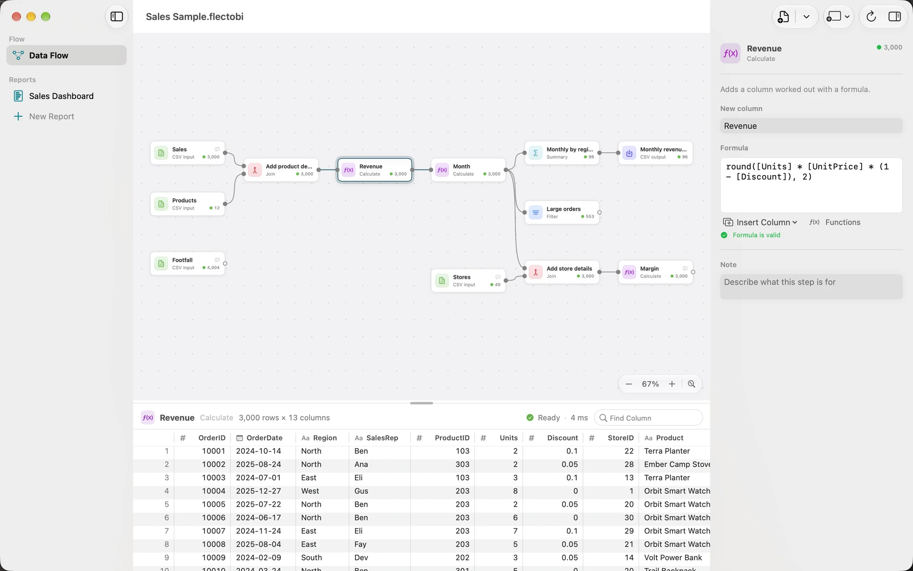
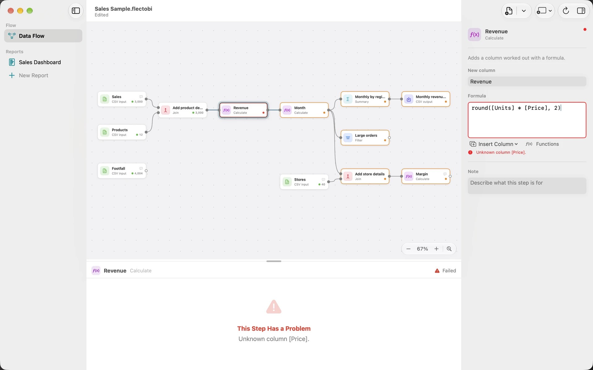

Formulas: write, read and fix
A Formula works out one Value for each row. If you have written =A2*B2 in Excel, you already know most of it. You use Formulas in a Calculate Step to add a Column, and in a Filter Step set to Formula to keep the rows where the Formula is true.

Write a Formula
- Select a Calculate Step, or add one with Add Transform.
- Type a name for the new Column.
- Click the Formula field and type. Use Insert Column to add a Column name, and Functions to search for a function.
- Check the line under the field. It says whether the Formula is valid.
- Click Apply, or press Command-Return. The new Column appears in the preview.
A leading = is ignored. A Formula can be 4,000 characters long and nested 64 levels deep.
Syntax
- Columns go in square brackets:
[Unit Price]. Spaces are fine, and case does not matter. Write]]for a literal bracket. - Text goes in quotes:
"North"or'North'. - Numbers are written plainly:
12or0.5. There is no%suffix. Write0.15, or useMOD(a, b)for a remainder. - Arithmetic uses
+ - * /. Also//for whole division and^for power. - Comparisons use
= <> < <= > >=, plusBETWEEN,IN (...),IS NULLandLIKE. - Logic uses
AND(a, b),OR(a, b)andNOT(x).CASE WHEN ... THEN ... ELSE ... ENDalso works. - Joining text uses
&:[First] & " " & [Last].
As in Excel, multiplication comes before addition, and & comes after arithmetic. Use brackets when in doubt.
A blank cell equals "" with = and <>. Inside IN (...), use ISBLANK([x]) instead.
Text and dates
Compare a date with quoted text: [OrderDate] = "2024-01-05". Or cut dates to a period with date_trunc('month', [OrderDate]). To show a date as text, use strftime([OrderDate], '%Y-%m'). Format codes start with %. Write %d/%m/%Y for day, month, year.
FlectoBI refuses to guess when types are mixed. Comparing text with a number gives a message that tells you to put the number in quotes or use VALUE(...).
Functions
Open Functions to search the most common ones. The list below adds a few Excel-style names you type yourself: MOD, DIVIDE, IFERROR, DATEDIF and EOMONTH.
Math
round(x, digits)rounds to decimal places:round([Price] * 1.2, 2).abs(x),ceil(x),floor(x)andsqrt(x)do what they say.power(x, y)raises to a power.ln(x)is the natural logarithm.least(a, b)andgreatest(a, b)return the smaller or larger Value.MOD(a, b)is the remainder.DIVIDE(a, b)divides and returns an empty Value when b is zero.
Text
upper(text),lower(text)andtrim(text)change case and spaces.length(text)counts characters.left(text, count)andright(text, count)take characters from either end.substr(text, start, count)takes from the middle, counting from 1.replace(text, find, new)changes every match:replace([Phone], '-', '').concat(a, b)joins text.contains(text, part)andstarts_with(text, part)answer true or false.strpos(text, part)gives the first position, or 0 if absent.strip_accents(text)removes accents.
Logic
if(test, then, otherwise):if([Units] > 10, 'Bulk', 'Single').coalesce(a, b)returns the first Value that is not empty.IFERROR(value, fallback)replaces an error with a fallback.ISBLANK(x)is true for an empty Value.nullif(a, b)gives an empty Value when the two are equal.
Dates
year(date),month(date)andday(date)take a part.date_trunc(part, date)rounds down to a month, quarter or year.date_diff(part, start, end)counts whole days, months or years.DATEDIF(start, end, "Y")does the same, the Excel way.EOMONTH(date, months)gives a month end.strftime(date, format)turns a date into text.today()andnow()give the current date and time.
The Functions list is a short view. More are accepted, such as sin, regexp_extract, quarter and make_date. A function that is not allowed says The function X is not available in formulas. Totals such as SUM belong in a Summary Step.
Read an error
The message under the field says what is wrong and, often, what to do.
- Unknown column [Revnue]. Did you mean [Revenue]? Fix the spelling.
- Text is missing its closing quote. Add the quote.
- Use commas to separate function arguments; ‘;’ is not allowed. Replace the semicolons.
- The formula looks unfinished. Check for a missing Value after an operator or a missing bracket.
- The condition must be true or false. A Filter Formula must give true or false.
- The formula is too complex. Split it over two Calculate Steps.

One bad row does not stop the Step. That row gets an empty Value, and the other rows work.
The minus sign rule
FlectoBI draws negative numbers with a true minus sign, as in −2.5K. It is easier to read. But what you copy and what you write is plain.
- Copying a number gives
-5with a hyphen, ready for Excel. - CSV and Excel Outputs write plain numbers that other tools can read.
- When you type, either
-or−works, in Formulas and number fields.